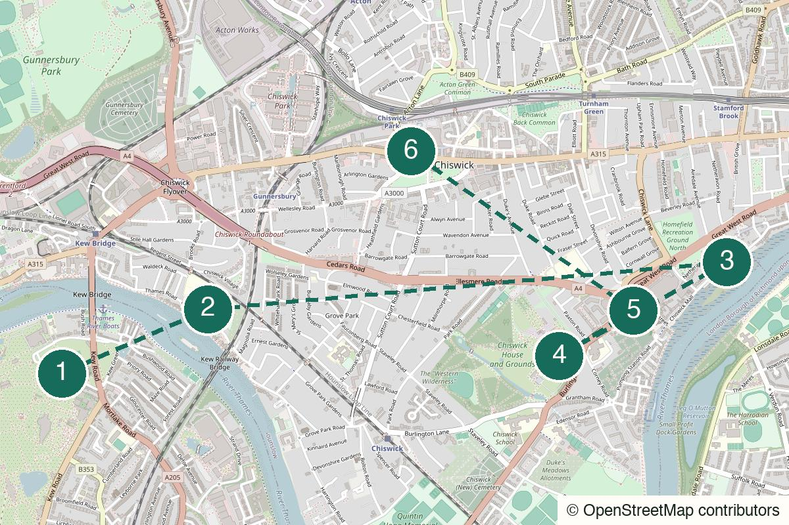

London Not yet field-walked
Rotherhithe
Warehouses, water and an old-room finish for a quieter stretch of the Thames.
Start Canada Water
Not yet field-walked · verify live details
A village green, Thames pubs, free historic grounds and Thai dinner in a properly old local.
Walked it? A field note keeps the route current.
Kew Gardens station – Arrive on a Richmond-bound Mildmay line train from Willesden Junction; do not enter the paid botanic garden.
Kew Green
Open the whole walk (opens in a new tab)
Draft route: use live walking directions for river crossings and access points, and check the Mildmay line, garden gates, pub hours, Thai kitchen and Saturday programme before setting off.
We never ask for your location.
Leave Willesden Junction for a different register of west London: village green first, then a river pub, a long old-bank walk and free gardens. The optional second pint is a pause, not a test of stamina; Thai dinner in the Old Pack Horse is where the route lands.
Not a Kew Gardens substitute, a fast pub crawl or a guaranteed quiet final room on a Saturday.
Good for a second or third date: there is a strong shared setting, but every stage lets the conversation breathe without a forced activity.
Works for two to four people. Keep the City Barge stop short and make the George & Devonshire branch a group decision rather than an obligation.
The river and gardens are excellent alone; skip the optional second pint and keep the Thai dinner only if it still feels like a treat.

Kew Green, Richmond TW9
From the start From Kew Gardens station, set Kew Green as the first pin and walk through the village. Do not enter the paid botanic garden; stay with the green, church and cricket-ground atmosphere.
The useful opening: low houses, a village green and the sudden sensation of having left the city before the route has even begun.
27 Strand-on-the-Green, Chiswick, London W4 3PH
From the previous stop Cross Kew Bridge using the live walking route, then follow the north-bank riverside to the pub. Keep this stop to one drink and a small snack; dinner comes later.
A historic riverside pub on Strand-on-the-Green. It gives the route its first proper pause without using up the appetite needed for the final Thai kitchen.
Walk from the previous stop (opens in a new tab)Official information (opens in a new tab)
Strand-on-the-Green and Chiswick Mall, London W4
From the previous stop Follow the river-facing houses on Strand-on-the-Green, then use the live map to cross back via Kew Bridge and pick up Chiswick Mall towards the gardens.
This is the real reason not to do Chiswick High Road: historic houses sit close to the Thames and the river starts to behave like a small old settlement rather than a London view.
Burlington Lane, Chiswick, London W4 2RP
From the previous stop Leave Chiswick Mall for the Burlington Lane entrance and use the live map for the nearest open gate. The gardens are the stop; entering the house is optional and separately ticketed.
Walk the main lawn, lake, conservatory area and whichever side paths have your attention. The gardens are free, but seasonal gates and closing times need a live check.
Walk from the previous stop (opens in a new tab)Official information (opens in a new tab)
8 Burlington Lane, Chiswick, London W4 2QE
From the previous stop This is just outside the gardens. Take it only if the group wants a second, more neighbourhood pause; otherwise walk straight on to dinner.
A Grade II-listed old-Chiswick pub near the former brewery. The most optional stop in the route: skip it freely if a pub crawl would flatten the ending.
Walk from the previous stop (opens in a new tab)Official information (opens in a new tab)
434 Chiswick High Road, London W4 5TF
From the previous stop Use the live walking route from Burlington Lane to the Chiswick High Road. If you skipped George & Devonshire, head here directly from the gardens.
The landing point: a Grade II-listed pub with a Thai kitchen, so curry, noodles or stir-fry arrive inside an old English-pub shell. On Saturdays it advertises live local music from around 8pm; verify the exact act, start time and food service before relying on it.
Walk from the previous stop (opens in a new tab)Official information (opens in a new tab)
Nearest practical station: South Acton Overground
Walk about ten minutes to South Acton, then take the Mildmay line via Acton Central to Willesden Junction. Check the live TfL service before leaving the pub.
Start 2–3pm on a dry afternoon
Treat The City Barge as a small first drink, not lunch. Save real appetite for The Old Pack Horse, and confirm Thai-kitchen hours or a booking before you commit.
The lighter daylight version: Kew Green, one drink, the old river walk and Chiswick House Gardens, then leave from the nearest practical station.
The complete 2–3pm version, ending at The Old Pack Horse before the short walk to South Acton.
Do not force the long river section in heavy rain. Keep Kew Green brief, go to one confirmed pub and choose a more indoor route rather than pretending this one still works.
Stay for the current Saturday music only if the listing appeals; otherwise dinner is a complete ending and South Acton is close.
After The City Barge, use the live route back to Kew Gardens; after the gardens, leave from the nearest confirmed station rather than forcing the full dinner branch.
Help keep it useful
Closed gates, changed hours and the point where you bailed are more useful than polite applause.